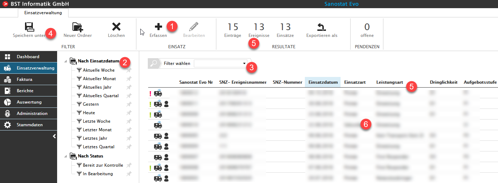
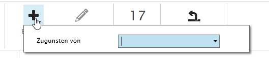
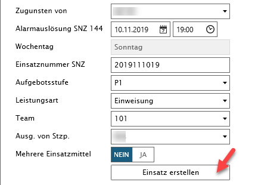
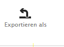
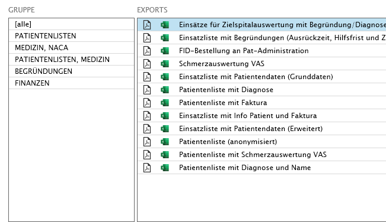

Einsatzverwaltung
Variationen
Die angezeigten Felder sowie die Bezeichnungen können je nach Rettungsdienst variieren!

Einsatz erfassen (1)
Um einen neuen Einsatz zu erfassen, öffnet sich nach dem Klick auf den +-Button das folgende Pop-up:

|
Begriff |
Definition |
|
Zugunsten von |
Definiert von welcher Sanitätsnotrufzentrale Sie aufgeboten wurden, resp. zugunsten welcher Aufgebotsstelle Sie den Einsatz gefahren sind. |
Durch Ihre Auswahl im Feld Zugunsten von werden weitere Felder eingeblendet.

|
Begriff |
Definition |
|
Mehrere Einsatzmittel |
Das Feld dient zur Verknüpfung von mehreren Einsätzen zu einem Ereignis. Die Berechnung der Hilfsfrist erfolgt auf Ebene Ereignis. |
Füllen Sie alle benötigten Felder aus und klicken Sie anschliessend auf Einsatz erstellen
Es öffnet sich automatisch die Erfassungsmaske.
Standardfilter (2)
Filter anwenden (3)
Weitere Informationen zur Verwendung des Filters entnehmen Sie bitte Standardfilter und FlexSelect.
Filter speichern (4)
Resultate (5)
Das angezeigte Suchresultat basiert auf der von Ihnen definierten Filterreihe. Wird diese modifiziert, wird das Suchresultat sofort neu geladen.
Ab Version V1.11.0 werden im Ribbonmenü die Anzahl Einsatz/Einträge, Einsatz/Ereignisse und Einsatz/Einsätze angezeigt. So ist eine Unterscheidung zwischen Ereignis und Einsatz sofort ersichtlich.

Zudem können Berichte der Gruppen PATIENTENLISTEN MEDIZIN/NACA PATIENTENLISTEN/MEDIZIN BEGRÜNDUNGEN FINANZEN direkt als Excel oder pdf Datei exportiert werden.

Tipp
Durch einen Doppelklick auf eines der geladenen Ergebnisse, gelangen Sie automatisch auf dessen Erfassungsmaske.